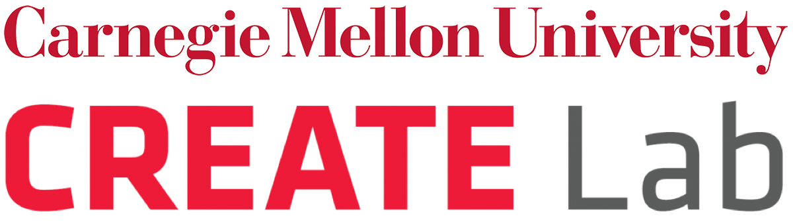
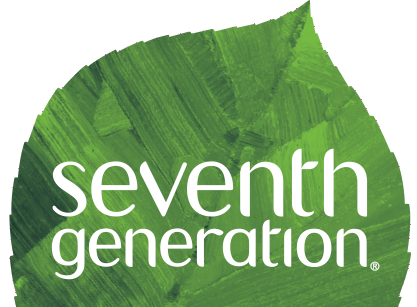

About Us
 The CREATE Lab (Community Robotics, Education and Technology Empowerment Lab) at Carnegie Mellon University, explores socially meaningful innovation and deployment of robotic technologies. CREATE is both a technology innovator and a community partner; this unique combination enables the creation of community-based technologies that help empower citizens to realize their vision for a better quality of life. For more information visit: cmucreatelab.org
 Seventh Generation is a sustainable home cleaning product company, based in Burlington, Vermont. For the past 30 years, Seventh Generation has been committed to using business as a force for good. The company partners with like-minded organizations, like CREATE Lab, to advocate for the rights of people and the planet because they believe that a company's values are as important as the products it makes. Seventh Generation knows that plant-based products can provide the efficacy you are looking for, and that products designed from renewable plant-based ingredients are a more sustainable option than ingredients made from petroleum. Above all, they believe that we have a responsibility to this generation and the next seven, and invite us all on their journey to nurture the health of the next seven generations. For more information visit: seventhgeneration.com
In 2018, Seventh Generation partnered with the Sierra Club's Ready for 100 campaign asking cities across the country to commit to 100% renewable energy. This effort is in service of a healthier future for all -- a move to 100% renewable energy will help reduce negative health effects (like asthma) caused by burning fossil fuels. Join the movement for 100% clean energy. Over 100 cities have committed to running on clean energy by 2035 -- is your city #Readyfor100? Ask your city to commit today!
Media Kit
The media kit can be downloaded from this link. The kit contains images of the user interface, organization logos (CMU CREATE Lab and Seventh Generation), application logos, and the demo video.
Our Local Partners
Our Louisville pilot is made possible with support from The Envirome Institute at the University of Louisville, and in partnership with:
- The West Jefferson County Community Task Force
- REACT (Rubbertown Emergency ACTion)
In addition, all smell reports originating from Louisville will be sent to the Louisville Metro Air Pollution Control District (APCD). Our Portland pilot is made possible with support from the Canary Fund, and in partnership with:
- Portland Clean Air
- Neighbors for Clean Air
- Hayden Island Neighborhood Network
- Oregon Environmental Council
- Ecotrust